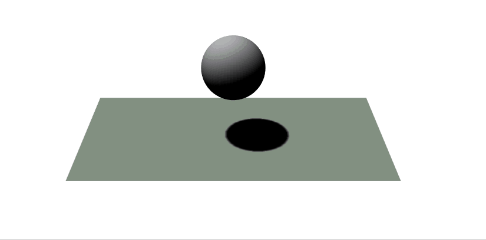
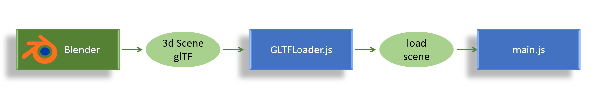
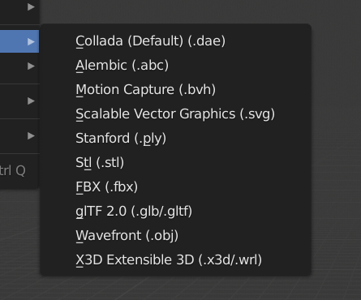

Introduction
This repo contains webGL Three.js based interface demos for interactions with 3d data using mouse and touch
01 mouse hover on mesh
open demo "01_mesh_mouse_on_hover" in full screen
Gif Demo

The user moves the mouse over the sphere object which changes color on enter and on exit events.
Design

This mouse hover example is easily reusable as it is split in modules. The "three_mouse.js" contains the conversion logic from the web mouse events to the 3D mouse mesh events. It is isolated from the main application logic in "main.js", and both isolated from the "three_app.js" which contains clasical three environment and shapes creation.
On init : The user is only supposed to know the names of the created obejcts in the the three scene, and passes a list of names to get back a list of meshes with `three.getObjects()`.
This list is then provided to the "three_mouse.js" module.
On event, the "three_mouse.js" triggers events on mouse entering the mesh and exit from the mesh. These events provide the name of the mesh. The name can be used to call a "three_app.js" function that sets the state according to the event, in this demo the emissive color is changing.
02 mouse down and touch
open demo "02_mouse_down_and_touch" in full screen
Gif Demo

The design and the on-hover effect from demo 01 are kept. Added is a "mouse down" and "touch start" events. These new events act on the specular effect of the material to give a green shininess.
Note that on the gif, the mouse down event is shown with a yellow spot added by the gif recorder. When the user touches the screen and start moving the scene, the mouse disappears and the touch is visible through the touch gray spot.
03 mouse on glTF imports
open demo "03_mouse_on_glTF_imports" in full screen
Workflow

Once familiar with THREE.js concepts, and there is the need to render a more complex scene, it becomes quickly complex to configure every parameter in the code. Looping between editing parameters and display require a reload. That's where professional 3d editing tools coming handy. Thanks to the [glTF](https://en.wikipedia.org/wiki/GlTF) (OpenGL Transmission Format), exporting a scene from [Blender](https://en.wikipedia.org/wiki/Blender_(software)) to THREE.js becomes easy. Not only 3d objects with beshes are exported but also cameras and lights. Note that export include options on blender are required.
Below is a screenshot from the blender Data outliner.

current limitations
The imported camera does not inherit the aspect ratio from the viewer and has to be adjusted, so reworked anyway.
The lights do not have the shadow camera fully configured, and the mapSize set to default, so there is still a need for customisation.
Gif Demo

The user here hovers and clicks on the sphere. Default materials have been used in this example to keep it as close to the previous examples as possible.
04 real rooms model
open demo "04_real_rooms_model" in full screen
Parametric modelling
 For technical and architectural designs, parametric modelling can come in quite handy. [Fusion360](https://www.autodesk.com/products/fusion-360/overview) is a reference tool when it comes to that. The usage of geometrical sketches reduces the complexity of rooms modelling by simply entering the dimensions.
For technical and architectural designs, parametric modelling can come in quite handy. [Fusion360](https://www.autodesk.com/products/fusion-360/overview) is a reference tool when it comes to that. The usage of geometrical sketches reduces the complexity of rooms modelling by simply entering the dimensions.
Workflow
The workflow is extended as shown below.

File Format
".fbx" is the only common format between both tools that keeps the scale and the hirerchy of objects. The ".stl" and ".obj" pack the whole model in a single mesh.
| Fusion 360 exports format |
Blender Import Formats |
 |
 |
Gif Demo